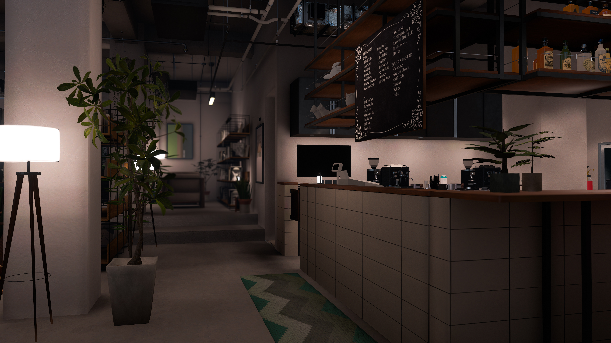

Q. グランドオープンはいつですか？
A. 来年初旬を予定しております。
次回開催：お知らせをご確認ください

Contact
応援メッセージや感想はこちら！
匿名で送れます。
マシュマロを開くお問い合わせはこちら
返信が必要な内容はこちらからお送りください。
お問い合わせフォームを開くA. 来年初旬を予定しております。
A. 現在は募集しておりませんが、ご相談したいという場合は上記お問い合わせからご連絡ください。
A. 不定期でアバターの制限を解除した『夕方営業』を実施予定です、随時お知らせをご確認ください。